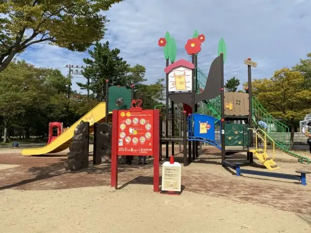
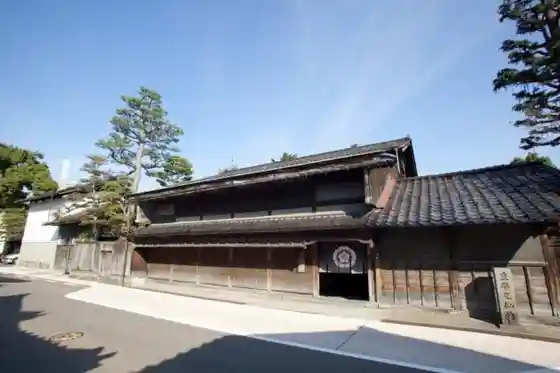
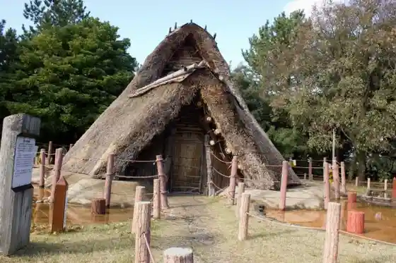
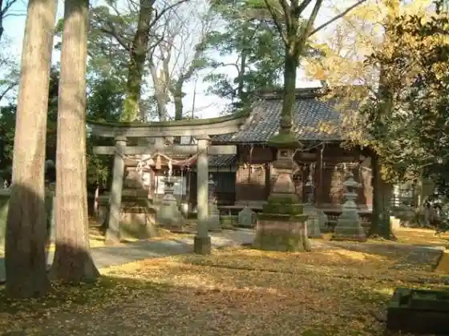

Japan / Ishikawa / Nonoichi
Nonoichi
Nonoichi · Ishikawa
Nonoichi
Highlighted on the Ishikawa map.

Sights
Juyo Bunkazai Kita Ie House
Nonoichi, Ishikawa · 076-248-1160 · Official / source link

Nonoichi Chuo Park
Nonoichi, Ishikawa · 076-227-6092 · Official / source link
Kuni Historic Site O Kyozuka Iseki
Nonoichi, Ishikawa · 076-246-0133 · Official / source link

Ai to Wa Hana no Gyararii no no Ichi Tsubaki Kan & Tsubakiyama
Nonoichi, Ishikawa · 076-227-6092 · Official / source link
Nuno City Shrine
Nonoichi, Ishikawa · 076-248-1610 · Official / source link

1 no 1 NONOICHI
Nonoichi, Ishikawa · 076-259-1167 · Official / source link
Ishikawa Prefectural Daigaku
Nonoichi, Ishikawa · 076-227-7220 · Official / source link
Manabi no Mori no no Ichi Karedo
Nonoichi, Ishikawa · 076-248-8099 · Official / source link
Nonoichi Local History Museum NoNo
Nonoichi, Ishikawa · 076-246-2672 · Official / source link
Kuni Historic Site Suematsu Haiji Ato
Nonoichi, Ishikawa · 076-227-6122 · Official / source link
Nonoichi Yakusho
Nonoichi, Ishikawa · 076-227-6000 · Official / source link